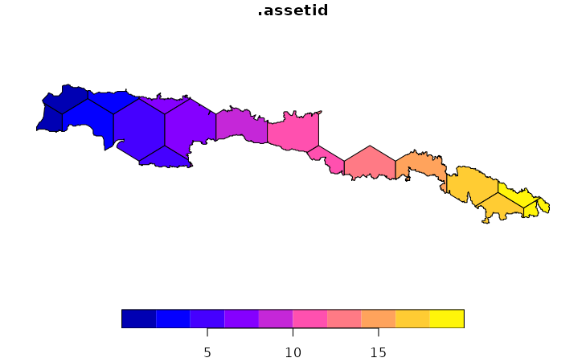
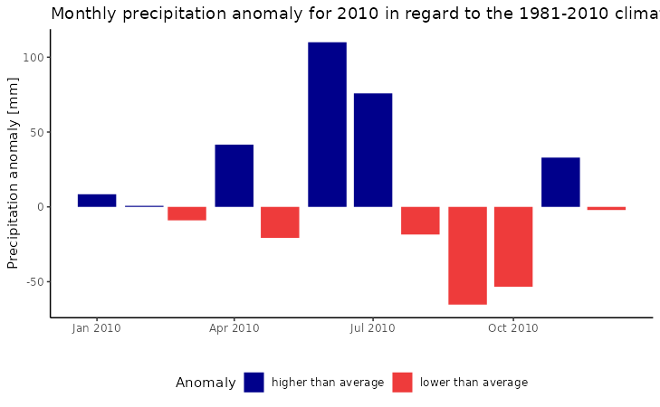
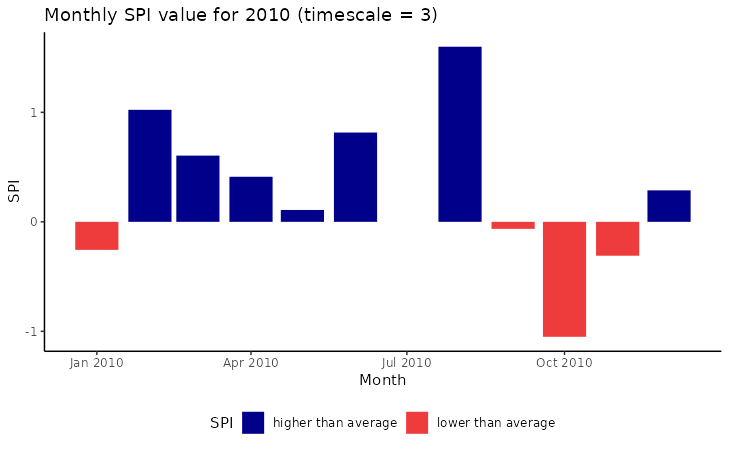

Quickstart
userguide.RmdIntroduction
In the following we will demonstrate an idealized workflow based on a subset of the CHIRPS dataset that is delivered together with this package. You can follow along the code snippets below to reproduce the results. Please note, that to reduce the time it takes to process this vignette, we will not download any resources from the internet. In a real use case, thus processing time might substantially increase because resources have to be downloaded and real portfolios might be larger than the one created in this example.
This vignette assumes that you have already followed the steps in Installation and have familiarized yourself with the terminology used in the package. If you are unfamiliar with the terminology used here, please head over to the Terminology article to learn about the most important concepts.
The idealized workflow for using {mapme.biodiversity} consists of the following steps:
- initialize your portfolio using an sf-object containing only geometries of type POLYGON
- decide which indicator(s) you wish to calculate and download the required resource(s)
- conduct your indicator calculation, which adds a nested list column to your portfolio object
- continue your analysis in R or decide to export your results to a GeoPackage to use it with other geospatial software
Getting started
First, we will load the {mapme.biodiversity} and the sf package for handling spatial vector data. For tabular data handling and the creation of a plot, we will also load the dplyr and ggplot2 packages. Then, we will read an package internal GeoPackage which includes the geometry of a protected area in the Dominican Republic from the WDPA database.
library(mapme.biodiversity)
library(sf)
library(dplyr)
library(ggplot2)
aoi_path <- system.file("extdata", "sierra_de_neiba_478140.gpkg", package = "mapme.biodiversity")
(aoi <- read_sf(aoi_path))
#> Simple feature collection with 1 feature and 4 fields
#> Geometry type: MULTIPOLYGON
#> Dimension: XY
#> Bounding box: xmin: -71.80933 ymin: 18.57668 xmax: -71.33201 ymax: 18.69931
#> Geodetic CRS: WGS 84
#> # A tibble: 1 × 5
#> WDPAID NAME DESIG_ENG ISO3 geom
#> <dbl> <chr> <chr> <chr> <MULTIPOLYGON [°]>
#> 1 478140 Sierra de Neiba National Park DOM (((-71.76134 18.66333, -71.76067 1…The sf-object contains a single object of geometry type MULTIPOLYGON. The {mapme.biodiversity} package, however, only supports geometries of type POLYGON, thus we need to cast the geometry before we advance. The resulting sf object also contains some metadata, that will be retained throughout the complete workflow. Because some of the casted geometries represent artifacts of the digitization process, in this example we will subset to only the largest polygon.
(aoi <- st_cast(aoi, to = "POLYGON")[1, ])
#> Warning in st_cast.sf(aoi, to = "POLYGON"): repeating attributes for all sub-
#> geometries for which they may not be constant
#> Simple feature collection with 1 feature and 4 fields
#> Geometry type: POLYGON
#> Dimension: XY
#> Bounding box: xmin: -71.80933 ymin: 18.57668 xmax: -71.33201 ymax: 18.69931
#> Geodetic CRS: WGS 84
#> # A tibble: 1 × 5
#> WDPAID NAME DESIG_ENG ISO3 geom
#> <dbl> <chr> <chr> <chr> <POLYGON [°]>
#> 1 478140 Sierra de Neiba National Park DOM ((-71.76134 18.66333, -71.76067 18…In the following, we will simulate a portfolio consisting of several polygons (assets, in the jargon of this package). To this end, we create smaller polygons within the original extent of the main polygon. This way, we can showcase the behavior of the {mapme.biodiversity} package for portfolios that contain multiple assets. We will only select single assets with geometry type POLYGON that lie within the original boundary of the protected area.
aoi_gridded <- st_make_grid(
x = st_bbox(aoi),
n = c(10, 10),
square = FALSE
) %>%
st_intersection(aoi) %>%
st_as_sf() %>%
mutate(geom_type = st_geometry_type(x)) %>%
filter(geom_type == "POLYGON") %>%
select(-geom_type, geom = x) %>%
st_as_sf()
metanames <- names(st_drop_geometry(aoi))
aoi_gridded[metanames] <- st_drop_geometry(aoi)Initialization of a portfolio
Now, we are ready to initiate a portfolio object containing multiple assets. We use the init_portfolio() function and set some attributes that are important for the subsequent processing. The function will add a unique identifier column called ‘assetid’ that is used to uniquely identify each asset in the portfolio.
sample_portfolio <- init_portfolio(
x = aoi_gridded,
years = 2010,
outdir = system.file("res", package = "mapme.biodiversity"),
tmpdir = system.file("tmp", package = "mapme.biodiversity"),
add_resources = FALSE,
cores = 1,
verbose = TRUE
)
plot(sample_portfolio["assetid"])
The first argument, x, is the sf-object that we want to turn into a portfolio. The argument years allows us to restrict our analysis to certain years only. Certain resources with a temporal dimension are only processed for the portfolio’s temporal extent. All resource and indicator functions will inform the user if the portfolio’s temporal extents do not intersect. The outdir and tmpdir arguments point towards directories on the local file system of your machine. If these directories do not exist, the package attempts to create them. The outdir cannot be equal to the tmpdir argument. All downloaded resources will be written to their respective directories within outdir. We will set the terra’s package temporal directory to directory within tmpdir and also any intermediate files during the calculation of an indicator will be written there. Thus, please ensure that you have write access to these directories and that there is sufficient free disk space to support the analysis of your portfolio.
In case your share a common outdir across different portfolios, with the add_resources arguments controls the behavior of the portfolio initialization. If set to TRUE, the function will automatically search for all available resources and add these as attributes to the portfolio, without further checking if these resources actually match its spatio-temporal extent. Only use this if you are sure that for your current portfolio, all resources have been previously downloaded. If set to FALSE, no pre-existing resources will be added to the portfolio. Once you request a specific portfolio for your resources, only those files will be downloaded that are missing in outdir. This behavior is beneficial if you share the outdir between different projects to ensure that only matching resources are returned.
The argument cores specifies the number of CPU cores available to the indicator routines for parallel processing. Parallel processing is deactivated on Windows by default. If you use another operating system you may set to a value greater 1 if you wish to activate parallel processing.
Finally, the verbose logical controls whether or not the package will print informative messages during the calculations. Note, that even if set to FALSE, the package will inform users about any potential error in specifying of arguments in the form of warnings and errors.
Getting the right resources
You can check which indicators are available via the available_indicators() function. For this, we inspect the names of the returned object:
names(available_indicators())
#> [1] "accessibility" "biome" "chirpsprec"
#> [4] "drought_indicator" "elevation" "emissions"
#> [7] "gmw" "landcover" "popcount"
#> [10] "soilproperties" "teow" "treecover"
#> [13] "treeloss" "tri" "wcprec"
#> [16] "wctmax" "wctmin"Say, we are interested in the precipitation indicator based on the CHIRPS dataset. We can learn more about this indicator and its required resources by using either of the commands below or, if you are viewing the online version, head over to the chirpsprec documentation.
?chirpsprec
help(chirpsprec)By inspecting the help page we learned that this indicator requires the chirps resource and it accepts three arguments, namely the scales_spi, spi_prev_years and engine arguments. scales_spi determines the time-scale for the calculation of the Standardized-Precipitation-Index (SPI), while spi_prev_years indicates how many previous years are included in the fitting process. The engine argument controls how zonal statistics for each asset in the portfolio is extracted.
With that information at hand, we can start to retrieve the required resource. We can learn about all available resources using the available_resources() function:
names(available_resources())
#> [1] "chirps" "ecoregions" "esalandcover" "greenhouse"
#> [5] "lossyear" "mangrove" "maxtemperature" "mintemperature"
#> [9] "nasagrace" "precipitation" "soilgrids" "srtmdem"
#> [13] "traveltime" "treecover2000" "worldpop"For the purpose of this vignette, we are going to download the chirps resource. We can get more detailed information about a given resource, by using either of the commands below to open up the help page. If you are viewing the online version of this documentation, you can simply head over to the chirps resource documentation.
?chirps
help(chirps)We can now make the chirps resource available for our portfolio. We will use a common interface that is used for all resources, called get_resources(). We have to specify our portfolio object and the names of the resource(s) we wish to download. Additional arguments for the specific resource can be specified. The output of the function is the portfolio object with its attributes appended for the new resource, thus we simply can overwrite the sample_portfolio variable.
sample_portfolio <- get_resources(x = sample_portfolio, resources = "chirps")
#> Starting process to download resource 'chirps'........
#> Skipping existing files in output directory.In case you want to download more than one resource, you can use the same interface and the resources will be made available sequentially. Required arguments for a resource are simply added as usual:
sample_portfolio <- get_resources(x = sample_portfolio,
resources = c("chirps", "treecover2000"),
vers_treecover = "GFC-2020-v1.8")Calculate specific indicators
The next step consists of calculating specific indicators. Note, that each indicator requires one or more resources that were made available via the get_resources() function explained above. Here, we are going to calculate the chirpsprec indicator which is based on the chirps resource. Since the resource has been made available in the previous step, we can continue requesting the calculation of our desired indicator. Note, the below command would issue an error in case a required resource has not been made available via get_resources() beforehand.
sample_portfolio <- calc_indicators(sample_portfolio,
indicators = "chirpsprec",
scales_spi = 3,
spi_prev_years = 8,
engine = "extract"
)The function call will inform us that we have not specified the two required arguments but that the default values have been inserted. If you get such a message for other indicators and you do not know what they mean, head over to the indicator help-page to learn about the available arguments.
Now let’s take a look at the results. We will select only some of the metadata and the output indicator column to get a clearer picture of what has happened.
(sample_portfolio <- sample_portfolio %>% select(assetid, WDPAID, chirpsprec))
#> Simple feature collection with 20 features and 3 fields
#> Geometry type: POLYGON
#> Dimension: XY
#> Bounding box: xmin: -71.80933 ymin: 18.57668 xmax: -71.33201 ymax: 18.69931
#> Geodetic CRS: WGS 84
#> # A tibble: 20 × 4
#> assetid WDPAID chirpsprec geom
#> <int> <dbl> <list> <POLYGON [°]>
#> 1 1 478140 <tibble [12 × 4]> ((-71.78546 18.658, -71.78546 18.67313, -71…
#> 2 2 478140 <tibble [12 × 4]> ((-71.80292 18.68321, -71.78546 18.67313, -…
#> 3 3 478140 <tibble [12 × 4]> ((-71.76134 18.66333, -71.76067 18.66267, -…
#> 4 4 478140 <tibble [12 × 4]> ((-71.7616 18.69374, -71.7616 18.68691, -71…
#> 5 5 478140 <tibble [12 × 4]> ((-71.73417 18.64352, -71.71386 18.63179, -…
#> 6 6 478140 <tibble [12 × 4]> ((-71.66801 18.63288, -71.69 18.64557, -71.…
#> 7 7 478140 <tibble [12 × 4]> ((-71.71386 18.68865, -71.71386 18.68691, -…
#> 8 8 478140 <tibble [12 × 4]> ((-71.65801 18.68222, -71.66613 18.68691, -…
#> 9 9 478140 <tibble [12 × 4]> ((-71.66613 18.63079, -71.66613 18.62665, -…
#> 10 10 478140 <tibble [12 × 4]> ((-71.63562 18.67697, -71.64227 18.67313, -…
#> 11 11 478140 <tibble [12 × 4]> ((-71.59453 18.66749, -71.59453 18.64815, -…
#> 12 12 478140 <tibble [12 × 4]> ((-71.52294 18.61972, -71.52294 18.63179, -…
#> 13 13 478140 <tibble [12 × 4]> ((-71.54943 18.67465, -71.5468 18.67313, -7…
#> 14 14 478140 <tibble [12 × 4]> ((-71.49535 18.64342, -71.49907 18.64557, -…
#> 15 15 478140 <tibble [12 × 4]> ((-71.46559 18.63735, -71.4752 18.63179, -7…
#> 16 16 478140 <tibble [12 × 4]> ((-71.43534 18.63634, -71.43264 18.63478, -…
#> 17 17 478140 <tibble [12 × 4]> ((-71.42747 18.62066, -71.42747 18.60424, -…
#> 18 18 478140 <tibble [12 × 4]> ((-71.35587 18.582, -71.35587 18.59046, -71…
#> 19 19 478140 <tibble [12 × 4]> ((-71.37974 18.61442, -71.37974 18.60424, -…
#> 20 20 478140 <tibble [12 × 4]> ((-71.34017 18.59953, -71.35587 18.59046, -…We obtained a new listed column in our sf object that is called like the requested indicator. For each asset in our portfolio, this column contains a tibble with 12 rows and 4 columns. Let’s have a closer look at these objects.
sample_portfolio$chirpsprec[10]
#> [[1]]
#> # A tibble: 12 × 4
#> dates absolute anomaly spi_3
#> <date> <dbl> <dbl> <dbl>
#> 1 2010-01-01 22 8.43 -0.256
#> 2 2010-02-01 26 0.700 1.02
#> 3 2010-03-01 45 -9 0.605
#> 4 2010-04-01 165 41.6 0.412
#> 5 2010-05-01 200 -20.7 0.108
#> 6 2010-06-01 227 110 0.815
#> 7 2010-07-01 159 75.8 NA
#> 8 2010-08-01 100 -18.5 1.60
#> 9 2010-09-01 111 -65.3 -0.0640
#> 10 2010-10-01 105 -53.4 -1.05
#> 11 2010-11-01 130 32.9 -0.309
#> 12 2010-12-01 8 -2.1 0.287For each asset, the result is a tibble in long format for 12 months in the year 2010. The precipitation indicator with the default setting delivered the absolute rainfall sum as well as the rainfall anomaly compared to the 1981-2010 climate normal period (make sure to read the detailed indicator documentation via ?chirpsprec). Let’s quickly visualize the results for a single asset:

If you wish to conduct your statistical analysis in R, you can use tidyr functionality to unnest one or multiple columns. Especially for large portfolios, it is usually a good idea to keep the geometry information in a separated variable to keep the size of the data object relatively small.
geometries <- select(sample_portfolio, assetid)
sample_portfolio %>%
st_drop_geometry() %>%
tidyr::unnest(chirpsprec) %>%
filter(assetid == 3)
#> # A tibble: 12 × 6
#> assetid WDPAID dates absolute anomaly spi_3
#> <int> <dbl> <date> <dbl> <dbl> <dbl>
#> 1 3 478140 2010-01-01 13 4.93 -0.407
#> 2 3 478140 2010-02-01 16 1.93 1.15
#> 3 3 478140 2010-03-01 27 -7.53 0.682
#> 4 3 478140 2010-04-01 129 32.2 0.523
#> 5 3 478140 2010-05-01 159 -10.3 0.169
#> 6 3 478140 2010-06-01 170 78 0.842
#> 7 3 478140 2010-07-01 139 64.6 NA
#> 8 3 478140 2010-08-01 98 -3.67 1.78
#> 9 3 478140 2010-09-01 100 -38.6 0.376
#> 10 3 478140 2010-10-01 104 -35.6 -0.762
#> 11 3 478140 2010-11-01 101 26.8 -0.0646
#> 12 3 478140 2010-12-01 7 -1.03 0.337Exporting an portfolio object
You can use the write_portfolio() function to save a processed portfolio object to disk as a GeoPackage. This allows sharing your data with others who might not be using R, but any other geospatial software. Simply point towards a non-existing file on your local disk to write the portfolio. The function will create an individual table for all processed indicators. Via the read_portfolio() function, a portfolio which has been written to disk in such a way can be read back into R. However, users should note that the portfolio-wide arguments that were set during the portfolio initialization are not reconstructed (e.g. the temporal extent, outdir and tmpdir, etc.). Thus if you wish to continue to use {mapme.biodiversity} functionality on such a portfolio object, make sure to re-run init_portfolio() on it.
tmp_output <- tempfile(fileext = ".gpkg")
write_portfolio(
x = sample_portfolio,
dsn = tmp_output
)
#> Writing layer `metadata' to data source
#> `/tmp/RtmpLaMBKi/file41d2ed0da42.gpkg' using driver `GPKG'
#> Writing 20 features with 2 fields and geometry type Polygon.
#> Updating layer `chirpsprec' to data source `/tmp/RtmpLaMBKi/file41d2ed0da42.gpkg' using driver `GPKG'
#> Writing 240 features with 5 fields without geometries.
(portfolio_from_disk <- read_portfolio(tmp_output))
#> Simple feature collection with 20 features and 3 fields
#> Geometry type: POLYGON
#> Dimension: XY
#> Bounding box: xmin: -71.80933 ymin: 18.57668 xmax: -71.33201 ymax: 18.69931
#> Geodetic CRS: WGS 84
#> # A tibble: 20 × 4
#> assetid WDPAID chirpsprec geom
#> <int> <dbl> <list> <POLYGON [°]>
#> 1 1 478140 <tibble [12 × 4]> ((-71.78546 18.658, -71.78546 18.67313, -71…
#> 2 2 478140 <tibble [12 × 4]> ((-71.80292 18.68321, -71.78546 18.67313, -…
#> 3 3 478140 <tibble [12 × 4]> ((-71.76134 18.66333, -71.76067 18.66267, -…
#> 4 4 478140 <tibble [12 × 4]> ((-71.7616 18.69374, -71.7616 18.68691, -71…
#> 5 5 478140 <tibble [12 × 4]> ((-71.73417 18.64352, -71.71386 18.63179, -…
#> 6 6 478140 <tibble [12 × 4]> ((-71.66801 18.63288, -71.69 18.64557, -71.…
#> 7 7 478140 <tibble [12 × 4]> ((-71.71386 18.68865, -71.71386 18.68691, -…
#> 8 8 478140 <tibble [12 × 4]> ((-71.65801 18.68222, -71.66613 18.68691, -…
#> 9 9 478140 <tibble [12 × 4]> ((-71.66613 18.63079, -71.66613 18.62665, -…
#> 10 10 478140 <tibble [12 × 4]> ((-71.63562 18.67697, -71.64227 18.67313, -…
#> 11 11 478140 <tibble [12 × 4]> ((-71.59453 18.66749, -71.59453 18.64815, -…
#> 12 12 478140 <tibble [12 × 4]> ((-71.52294 18.61972, -71.52294 18.63179, -…
#> 13 13 478140 <tibble [12 × 4]> ((-71.54943 18.67465, -71.5468 18.67313, -7…
#> 14 14 478140 <tibble [12 × 4]> ((-71.49535 18.64342, -71.49907 18.64557, -…
#> 15 15 478140 <tibble [12 × 4]> ((-71.46559 18.63735, -71.4752 18.63179, -7…
#> 16 16 478140 <tibble [12 × 4]> ((-71.43534 18.63634, -71.43264 18.63478, -…
#> 17 17 478140 <tibble [12 × 4]> ((-71.42747 18.62066, -71.42747 18.60424, -…
#> 18 18 478140 <tibble [12 × 4]> ((-71.35587 18.582, -71.35587 18.59046, -71…
#> 19 19 478140 <tibble [12 × 4]> ((-71.37974 18.61442, -71.37974 18.60424, -…
#> 20 20 478140 <tibble [12 × 4]> ((-71.34017 18.59953, -71.35587 18.59046, -…